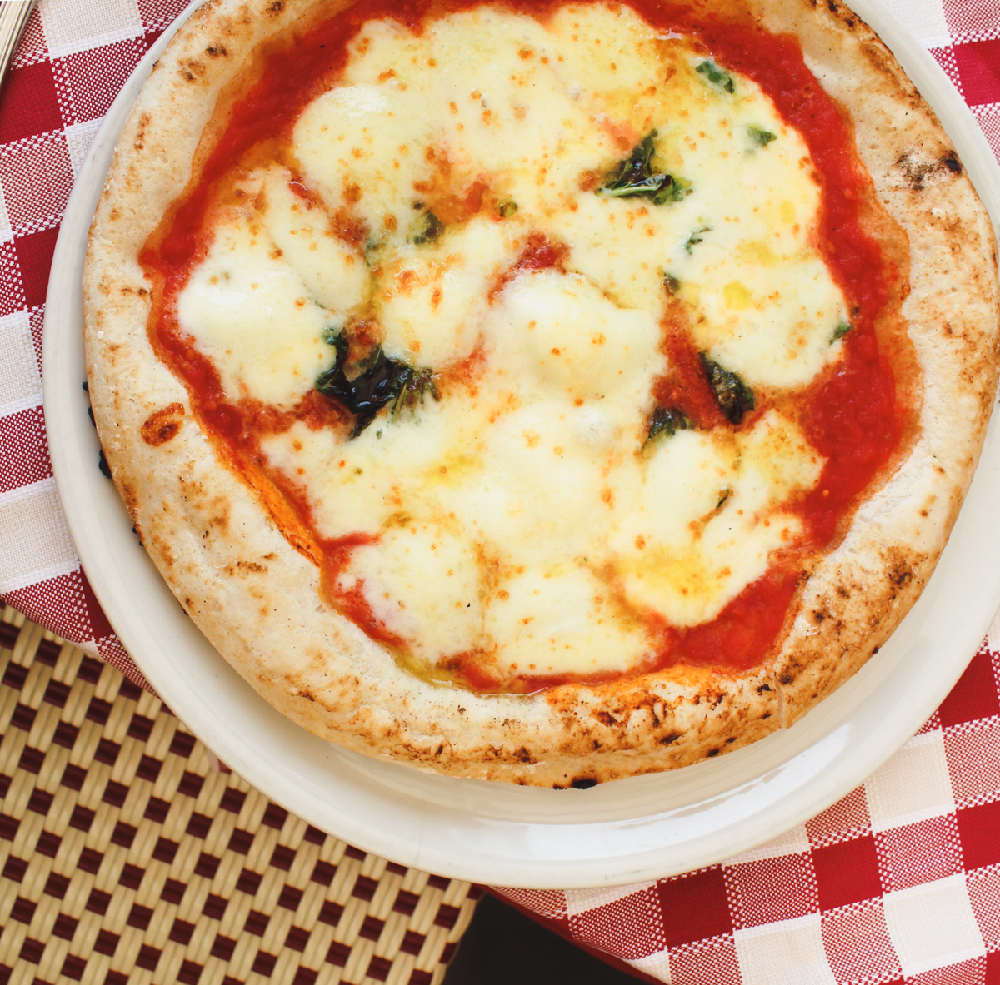

Pizza Recipe

Home
Description
This kind of pizza is a local delicacy and world famous for its flavour and consistency. A true ode to Italy's food achievements
Napoli is visited by millions each year who taste pizza like this, and never want another kind again!
Ingredients
- Flour
- Dough
- Mozzarella Cheese
- Big Red Tomatoes
- Oregano
- Ham (optional)
- Black Olives (optional)
Steps
- Combine your dough and flour to make a cushion-like texture on the dough
- Flatten it out
- Pour the ham and cover it with cheese
- Make tomato sauce BY HAND until its a gooey paste, and keep it on low heat for a while
- Pre-heat the oven to 150ª and insert the casserolle
- After two hours take it out, and pour the steamy tomato sauce on top
- Embellish the dish with oregano and olives on top
Enjoy your classic Italian dish!